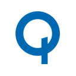

QCOMNASDAQ · Qualcomm Incorporated
Fair value (blend propio)
$166.68
vs. $172.47 mercado · −3.4%
POSTURA DEL ANÁLISIS: NEUTRAL, CON SESGO CAUTELOSO — EL PRECIO SIGUE APENAS POR ENCIMA DEL BLEND DE CINCO MÉTODOS, Y EL AÑO FISCAL 2027 ARRANCA CON UNA GUÍA DE −12% — el negocio fuera de los celulares acelera (automóvil +89% en el trimestre, meta de $5 mil millones en centros de datos para FY2027) y la licencia con Apple quedó renovada, pero la salida de Apple como cliente de chips y la presión de costos de memoria y obleas bajan el EPS de consenso de 2027 un 9% (ver Sección 13)
Este documento es análisis independiente con fines informativos y educativos. El autor no es un asesor financiero registrado (no CFA / no matriculado ante la CNV/SEC) y este contenido no constituye una recomendación de compra, venta o mantenimiento para ningún lector en particular. Ver disclosure completo al pie.
QCT (chips: celulares, automóvil, IoT/PC, centros de datos) · QTL (licenciamiento de patentes celulares) · QSI (inversiones estratégicas)
Qualcomm cerró, el 4 de noviembre de 2026, su año fiscal 2026 con ingresos de $43.12 mil millones (−2.6%) y un EPS
no-GAAP de $10.54 (−12.4%). El cuarto trimestre (cerrado el 27 de septiembre) mostró las dos caras de la
transición: celulares −26.2% a $5.14 mil millones por la salida de Apple, y automóvil +89.0% a un récord de $1.99
mil millones. QTL renovó sus licencias de largo plazo con Apple, Huawei y Transsion, y la compañía anunció una
colaboración plurianual con Amazon para centros de datos y reiteró su meta de $5 mil millones de ingresos de Data
Center para el fiscal 2027, con los ingresos fuera de celulares creciendo más de 60%. Pero la guía del primer
trimestre fiscal 2027 —ingresos de $10.4–11.2 mil millones (−11.9% interanual) y EPS no-GAAP de $2.15–2.35
(−19.1%)— hundió la acción 9.5% al día siguiente. El blend ponderado pasa de $176.39 (septiembre con la regla de
pesos vigente) a $166.68, 3.4% por debajo del precio de $172.47.
Var. ingresos (últ. trim.)
−8.4%
01 — Resumen Ejecutivo
El reemplazo de Apple ya se ve en el automóvil — el hueco, en los celulares y en la guía
El 4 de noviembre de 2026 Qualcomm reportó el cuarto trimestre de su año fiscal 2026 (cerrado el 27 de septiembre):
ingresos de $10.32 mil millones (−8.4% interanual; $10.44 mil millones no-GAAP, en el techo de la guía) y EPS
no-GAAP de $2.17 (−27.7%). Dentro de QCT, los celulares cayeron 26.2% a $5.14 mil millones —la salida
de Apple como cliente de módems y un mercado premium de Android maduro—, mientras el automóvil creció
89.0% a $1.99 mil millones (su primer trimestre de $2 mil millones) y el IoT 4.5% a $1.89 mil millones.
Automóvil más IoT crecieron 35.6% combinados. El margen de EBT de QCT bajó a 23.8% (desde 29%) por costos más altos
de memoria, obleas y empaquetado.
El año fiscal 2026 cerró con ingresos de $43.12 mil millones (−2.6%), EPS no-GAAP de $10.54 (−12.4%) y EPS GAAP de
$12.70, inflado por un beneficio fiscal no-caja de $5.7 mil millones ($5.32 por acción) por la liberación de la
reserva de valuación constituida en el cuarto trimestre de 2025. El flujo de caja libre fue de $8.65 mil millones
(20.1% de los ingresos, contra 29.0% en 2025) y la compañía devolvió $11.67 mil millones en recompras y dividendos
—135% del flujo de caja libre—.
Hubo tres buenas noticias: QTL renovó sus licencias de largo plazo con Apple, Huawei y Transsion
(la de Apple vencía hacia 2027); Qualcomm anunció una colaboración plurianual con Amazon para centros
de datos; y Cristiano Amon reiteró la meta de $5 mil millones de ingresos de Data Center para el fiscal
2027, con los ingresos fuera de celulares creciendo más de 60%. La mala noticia es la guía del primer
trimestre fiscal 2027: ingresos de $10.4–11.2 mil millones (−11.9% interanual en el punto medio) y EPS no-GAAP de
$2.15–2.35 (−19.1%). La acción cayó 9.5% al día siguiente y cerró el 13 de noviembre en $172.47. El blend de cinco
métodos da $166.68 (−3.4%), prácticamente donde estaba en septiembre (−3.7%).
02 — Historia y Evolución
De la patente de CDMA a la caja de peaje del 5G —y ahora, a competir en el patio trasero de NVIDIA
Qualcomm fue fundada en 1985 en San Diego por siete ingenieros liderados por Irwin Jacobs y Andrew Viterbi, con la
apuesta de que el CDMA era superior al estándar de telefonía móvil de la época. Salió a bolsa en 1991. Durante veinte
años convirtió su cartera de patentes de CDMA, 3G y 4G en un modelo con dos motores: vender los chips de los
teléfonos (QCT) y cobrar una regalía sobre casi todos los smartphones del mundo, usen o no un chip de Qualcomm (QTL),
con márgenes cercanos a 70%.
La historia reciente tiene operaciones fallidas de gran escala —la compra de NXP (2018) que China no aprobó, la
oferta hostil de Broadcom (2018) bloqueada por EE.UU.— y una guerra de litigios con Apple que terminó en 2019 con un
acuerdo de licencia y de suministro de chips. Ese suministro de módems es el que se desmonta en 2026; la licencia de
patentes, en cambio, quedó renovada a largo plazo en el reporte de noviembre de 2026. En 2021 Qualcomm compró Nuvia
(núcleo de CPU "Oryon", base de los chips para PC, celulares de gama alta y centros de datos) y en 2025 Alphawave Semi
($2.4 mil millones, conectividad para chips de centro de datos). Cristiano Amon, CEO desde junio de 2021, tiene el
mandato de diversificar más allá del smartphone: la meta de ingresos fuera de celulares es de $40 mil millones para
el fiscal 2029.
Ingresos anuales reportados, FY2018–FY2026 (año fiscal cerrado a fines de septiembre), en miles de millones de USD. El pico de FY2022 ($44.2B), la resaca de FY2023 (−19%), la recuperación de FY2024–2025 y la leve caída de FY2026 por la salida de Apple. Fuente: SEC EDGAR XBRL.
A $172.47 sobre ~1,073 millones de acciones diluidas, Qualcomm vale ~$185 mil millones: una fracción de NVIDIA o
Broadcom y por debajo de Texas Instruments. Dentro de los semiconductores de gran capitalización sigue siendo el nombre
"de valor": múltiplo bajo, dividendo de ~2.1% y la menor exposición directa al gasto de infraestructura de IA.
03 — Modelo de Negocio y Segmentos
Un negocio de chips de márgenes medios, subsidiado por un negocio de licenciamiento de márgenes altísimos
Qualcomm reporta tres segmentos. QCT diseña y vende semiconductores (celulares, radiofrecuencia,
automóvil, IoT, PC y, desde 2025, CPU y aceleradores de centro de datos). QTL licencia la cartera de
patentes de estándares celulares. QSI es la cartera de inversiones estratégicas, excluida del no-GAAP.
Ingresos por segmento, 4Q FY2026 (miles de millones USD). QTL genera ~43% del EBT de QCT con ~14% de sus ingresos.
Ingresos de QCT por mercado final, 4Q FY2026 (miles de millones USD). Celulares (rojo, −26% interanual) es el problema; automóvil (+89%) e IoT (+4%) son el plan de reemplazo.
QTL sigue siendo lo que diferencia a Qualcomm: $5.56 mil millones de ingresos en el año con 72% de margen de EBT. La
renovación de largo plazo con Apple, Huawei y Transsion despeja el riesgo de renegociación más grande que tenía el
segmento para 2027. Lo que no se renueva es el negocio de chips con Apple, que el mercado estima en $5.7–5.9 mil
millones anuales de módems (más contenido de radiofrecuencia).
04 — Desarrollos Recientes y Perspectiva
El reporte de noviembre: récord en automóvil, licencias renovadas, Amazon — y una guía de −12%
El cuarto trimestre: en el techo de la guía, con márgenes en compresión
Los ingresos no-GAAP del cuarto trimestre ($10.44 mil millones) quedaron en el techo del rango guiado en julio ($9.7–10.5
mil millones) y el EPS no-GAAP ($2.17) dentro del rango ($2.05–2.25). El margen operativo GAAP bajó a 13.1% (desde
25.9% un año antes); el EBT GAAP ($1.17 mil millones) quedó muy por debajo del no-GAAP ($2.67 mil millones) por
partidas relacionadas con adquisiciones, compensación en acciones y QSI. La compañía mencionó "aumentos de costos de
insumos en toda la industria" y acciones de precio en respuesta, con un efecto en el margen bruto que todavía no
terminó.
La guía del 1Q FY2027: el hueco de Apple se ve completo
Para el trimestre que cierra en diciembre de 2026, Qualcomm guio ingresos de $10.4–11.2 mil millones (QCT $9.0–9.6
mil millones incluyendo Data Center, QTL $1.3–1.5 mil millones) y EPS no-GAAP de $2.15–2.35. En el punto medio, son
11.9% menos ingresos y 19.1% menos EPS que un año antes. Es el primer trimestre de diciembre sin el pico de módems del
iPhone. La acción cayó de $173.19 a $156.75 en la sesión siguiente (−9.5%) y luego recuperó parte.
El plan de reemplazo: fuera de celulares +60% en FY2027 y $5 mil millones de Data Center
Amon dijo que el fiscal 2027 "marca el comienzo de la inflexión de ingresos fuera de celulares, incluida la rampa de
Data Center", con esos ingresos creciendo más de 60% —de ~$13.1 mil millones (automóvil + IoT en FY2026) a ~$21.0 mil
millones— y reiteró la meta de $5 mil millones de Data Center para FY2027. El anuncio de una colaboración de producto
de varias generaciones con Amazon para centros de datos de IA se suma a Humain (Arabia Saudita) como
cliente declarado. La meta de $15 mil millones de Data Center para FY2029 sigue en pie, pero todavía sin ingresos
reportados que la respalden.
Licencias: Apple, Huawei y Transsion renovadas
El riesgo de que la licencia de patentes con Apple —que vencía hacia 2027— se renegociara a una tarifa menor o fuera a
litigio queda despejado: QTL renovó acuerdos de largo plazo con Apple, Huawei y Transsion. Los términos no son
públicos. Es la mejor noticia del reporte para la calidad del flujo de caja de largo plazo.
Financiamiento: $4.0 mil millones en notas
El 13 de noviembre de 2026 Qualcomm emitió $4.0 mil millones en notas con vencimientos entre 2028 y 2036 (cupones de
5.000% a 5.800%). Es posterior al cierre del año fiscal y neutra para la deuda neta (la caja entra con la deuda).
05 — Estados Financieros
El EPS GAAP sigue distorsionado por el impuesto; el no-GAAP cayó 12%
Margen operativo GAAP por trimestre fiscal, 3Q FY2025 a 4Q FY2026. La compresión refleja costos de insumos, la salida de Apple y gastos de la nueva línea de centros de datos. Fuente: SEC EDGAR XBRL.
El margen operativo GAAP pasó de 27.5% en el primer trimestre fiscal 2026 a 13.1% en el cuarto. Una parte es
estructural (menos ingresos de Apple con la misma base de I+D), otra es transitoria (costos de memoria y obleas que
la compañía intenta trasladar a precios) y otra es inversión (la nueva línea de centros de datos). El EPS no-GAAP es
la lectura más limpia: −12.4% en el año, y la guía del primer trimestre fiscal 2027 implica −19%.
06 — Deuda y Balance
Deuda neta de $7.4 mil millones, ~0.7x el EBITDA
La deuda neta subió de $6.97 mil millones en junio a $7.43 mil millones: la compañía devolvió más caja de la que
generó. El patrimonio neto saltó por la liberación de la reserva de valuación fiscal (un activo diferido, no caja). Con
~0.7x el EBITDA, el balance no es una restricción.
07 — Flujo de Caja y Capital Allocation
El flujo de caja libre bajó a 20% de los ingresos — y la compañía devolvió 135% de él
El flujo de caja operativo cayó 20% y el capex se duplicó, así que el margen de FCF bajó de 29.0% a 20.1%. Es el ancla del DCF de la Sección 13: el caso Base parte de
21% en el fiscal 2027. Devolver $11.67 mil millones contra $8.65 mil millones de FCF se financió con caja y títulos;
a ese ritmo, las recompras tienen que bajar o la deuda subir.
Flujo de caja libre anual, FY2022–FY2026 (miles de millones USD). Fuente: SEC EDGAR XBRL y 8-K.
08 — Comparables de Industria
QCOM frente a los grandes de semiconductores
P/E sobre el EPS de consenso 2027E. ARM queda fuera del gráfico y del promedio por estar fuera de escala.
El dato nuevo es que Qualcomm ya no es "barata" frente al panel: cotiza a 18.0x su EPS de 2027, en línea con el
promedio de 18.1x, porque el EPS de 2027 cae (−9.0%) mientras el de los pares sube y porque NVIDIA se comprimió a
10.3x. Sobre el EPS del fiscal 2026 ($10.54) cotiza a 16.4x.
09 — Gobierno Corporativo y Estructura Accionaria
Sin accionista de control, con un CEO en el sexto año de su mandato de diversificación
Qualcomm tiene una sola clase de acciones y ningún accionista de control: los mayores tenedores son fondos indexados
(Vanguard y BlackRock, en torno a 9-10% y 7-8%). Cristiano Amon es presidente y CEO desde junio de 2021; la
mayor parte de su compensación es en acciones sujetas a desempeño (ver proxy statement). No hubo un proxy nuevo desde
la edición de septiembre; el próximo acompaña a la asamblea anual, que Qualcomm suele celebrar en marzo.
10 — Registro de Riesgos
Qué podría cambiar esta lectura
11 — Catalizadores
Agenda de eventos relevantes
12 — Modelo Financiero Proyectado y Momentum de Estimados
El consenso de 2027 bajó: menos EPS, algo más de ingresos
Ingresos: FY2025 y FY2026 reportados, FY2027E y FY2028E de consenso (miles de millones USD). Fuente: SEC EDGAR y stockanalysis.com.
El consenso proyecta un fiscal 2027 de transición —más ingresos por centros de datos y automóvil, menos margen— y un
salto en 2028. El precio objetivo promedio bajó de $193.10 en septiembre a $185.96, con la calificación agregada en
"Hold". Para años posteriores a 2028 remitimos a los supuestos del DCF.
13 — Valuación: Cinco Métodos y el Fair Value
Cuánto vale la acción con el hueco de Apple a la vista
Calculamos el valor razonable con cinco enfoques —DCF, comparables, suma de las partes, reversión histórica y
consenso— y los combinamos con los pesos fijos del desk: DCF 7.5% y suma de las partes 7.5% (los dos dependen de
supuestos de largo plazo), comparables 25%, reversión 35% y consenso 25%. Todos los números salen de un script
(.claude/skills/informe-bigtech/modelos/qcom/valuacion.py).
Qué cambió respecto de septiembre. Septiembre publicó un promedio simple de $169.86; con los pesos
vigentes, sus métodos daban $176.39. Esta edición da $166.68 (−5.5%). Al reconstruir el DCF de
septiembre, el caso Base se reproduce ($162.11 contra $162.14), pero el Bear y el Bull no ($94.40 y $290.21 contra
$103.03 y $298.77): con la trayectoria declarada quedan ~$8.6 por acción abajo, y esa edición no documentó la senda
año a año de esos dos escenarios. Como solo el Base entra al blend, la diferencia no lo afecta.
Método 1 — Flujo de caja descontado (DCF), tres escenarios
El año 0 son los ingresos reales del fiscal 2026 ($43.12 mil millones). El crecimiento del año 1 se ancla en lo que se
ve hacia adelante (regla del desk de sobreponderar la demanda futura en semiconductores): el caso Base usa el
consenso del fiscal 2027 (+5.3%), coherente con una guía que combina celulares en caída y no-celulares +60%; el Bear
supone −4% (la rampa de Data Center se demora y Apple pesa todo el año) y el Bull +12%. El margen de FCF del año 1 se
ancla en el real del fiscal 2026 (20.1%): Base 21% → 26%, Bear 20% plano (el nivel ya alcanzado, no por debajo), Bull
23% → 30%. El WACC sube 0.3 puntos en los tres escenarios por el Treasury a 10 años (de 4.81% el 8 de septiembre a
5.15%): 10.3% en el Base, 11.3% en el Bear y 9.3% en el Bull.
El caso Base ($145.33) queda 15.7% por debajo del precio. El promedio simple de los tres escenarios es
$159.68 y el valor esperado ponderado (25/45/30), $161.79. El 73.6% del EV del Base viene del valor terminal: el
resultado es sensible al WACC y al crecimiento terminal, como muestra la grilla.
Sensibilidad del caso Base: WACC × crecimiento terminal
Método 2 — Múltiplos de comparables (P/E 2027E)
Aplicamos el P/E 2027E promedio del panel (NVDA 10.3x, AVGO 17.9x, TXN 26.1x; promedio 18.1x; ARM excluido por estar
fuera de escala) al EPS de consenso del fiscal 2027 de Qualcomm ($9.59).
Resultado: $173.44, en línea con el precio. En septiembre el método (por EV/EBITDA, 17.5x) daba
$201.70; el cambio refleja el EPS de 2027 más bajo y un panel más barato, además del cambio de métrica.
Método 3 — Suma de las partes (SOTP): QCT y QTL por separado
Misma metodología que septiembre: EBT de segmento del último trimestre anualizado (×4), con 12x para QCT y 12x para
QTL, menos la deuda neta.
Resultado: $129.96, el más bajo de los cinco. Anualizar un trimestre con celulares −26% probablemente
subestima a QCT; con el EBT del año fiscal completo ($10.10 mil millones QCT, $4.02 mil millones QTL) el método daría
$151.02. Aun así, ni el techo de la sensibilidad llega al precio.
Método 4 — Reversión a la media histórica propia (ventana limpia, EPS no-GAAP)
El P/E GAAP sigue inutilizable por los dos movimientos de reserva de valuación fiscal; usamos el P/E no-GAAP de los
últimos cuatro cierres de trimestre fiscal.
Aplicado al EPS no-GAAP del fiscal 2026 ($10.54), el múltiplo de 15.23x da $160.53, 6.9% por debajo del
precio. La acción cotiza a 16.4x ese EPS, por encima de su media reciente.
Método 5 — Consenso de Wall Street
Síntesis: los cinco métodos, uno al lado del otro
"Football field" de valuación. La línea roja marca el precio de mercado ($172.47); la azul, el blend ponderado ($166.68).
El blend ponderado da $166.68, 3.4% por debajo del precio de $172.47 (septiembre: −3.7%). Sin el
consenso, daría $160.26. Los métodos atados a los fundamentals propios (DCF, suma de las partes y reversión) quedan
entre 7% y 25% por debajo del precio; comparables y consenso, en línea o algo arriba. La postura no cambia:
neutral, con sesgo cauteloso. El reporte despejó un riesgo (la licencia de Apple) y mostró que el
reemplazo avanza en el automóvil, pero el año fiscal 2027 arranca con menos ganancias y la tesis de centros de datos
todavía no está en los números.
14 — Limitaciones del Modelo
Qué asume este análisis, y dónde puede fallar
El DCF ancla el año 1 en el consenso del fiscal 2027, que depende de que los ingresos fuera de celulares crezcan
más de 60% y de que Data Center llegue a $5 mil millones: si se cumple y además el margen se recupera, el valor es
mayor (el Bull da $259.27); si se demora, menor. El 73.6% del EV del Base viene del valor terminal. El Bear y el Bull
de septiembre no se reproducen con la trayectoria declarada (el Base sí). La suma de las partes anualiza un
trimestre con celulares en −26%, lo que probablemente subestima a QCT. El método de comparables cambió de EV/EBITDA
a P/E 2027E. Los términos de la renovación de licencias con Apple, Huawei y Transsion no son públicos. No hay
consenso público para el fiscal 2029 en adelante: para esos años remitimos a los supuestos del DCF.
Documento elaborado a partir de fuentes públicas: SEC EDGAR (Form 8-K Exhibit 99.1, 10-K, 10-Q, XBRL companyfacts
API, CIK 0000804328), comunicados y conference calls de Qualcomm, S&P Global Market Intelligence,
stockanalysis.com, Yahoo Finance y prensa financiera especializada. Cifras fundamentales con fecha de corte en el
8-K y el 10-K del 4-nov-2026 (año fiscal cerrado el 27-sep-2026); precio de mercado, Treasury a 10 años y precios de
comparables al cierre del 13-nov-2026; consenso al 15-nov-2026.
Sobre el autor y la naturaleza de este documento: este informe es un análisis independiente
elaborado por Manfredi Investment Research & Markets con fines exclusivamente informativos y educativos. El autor
no es un asesor de inversión registrado, no está matriculado ante la Comisión Nacional de Valores (CNV), la SEC, ni
ningún otro organismo regulador equivalente, y no mantiene una relación de asesoramiento financiero personalizado con
el lector. Ninguna cifra de este documento —incluido el "fair value" de portada, los escenarios de DCF, ni la
síntesis de la Sección 13— constituye una recomendación de compra, venta o mantenimiento para ningún lector en
particular, ni considera la situación financiera, los objetivos o el perfil de riesgo individual de quien lo lee. Los
escenarios de DCF son estimaciones propias sujetas a los supuestos declarados explícitamente en la Sección 13, y no
representan guidance oficial de ninguna de las compañías mencionadas salvo donde se cita de forma directa y
atribuida. Verificar cifras contra el 10-Q/10-K/8-K más reciente de la compañía, y consultar a un asesor financiero
matriculado, antes de tomar cualquier decisión de inversión.